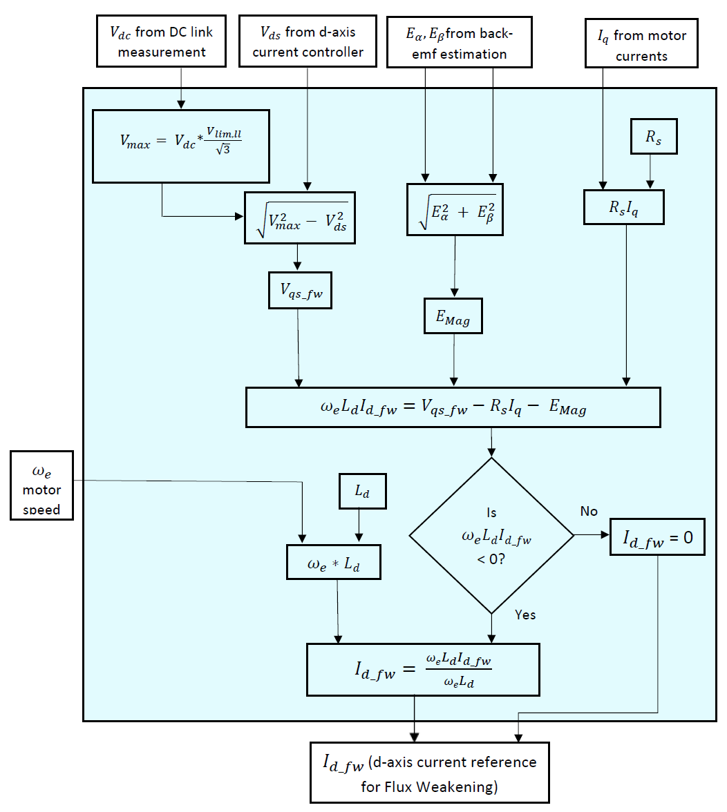
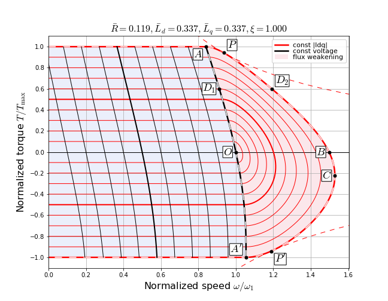
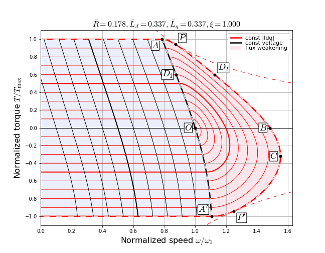
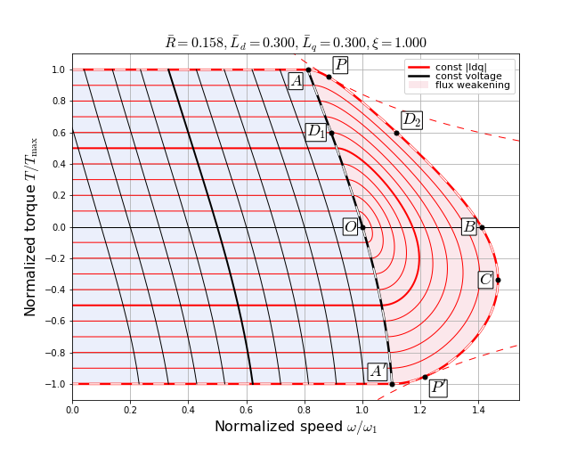

5.5.1.3.1. 基于方程的弱磁控制¶
5.5.1.3.1.1. 概述¶
弱磁（FW）模块需要计算适当的 d 轴电流参考 \(I_{d\_fw}\) ，以使电机在不增加电机电压的情况下以高于额定速度运行。实现了一种基于方程的弱磁算法。该算法基于开环方法计算 FW 运行的电流参考（\(I_{d\_fw}\)），使用电机电压方程。根据应用需求，用户可以启用或禁用弱磁。
5.5.1.3.1.2. 流程图和说明¶
图 5.82 展示了弱磁算法的流程图。
{kind=link}

图 5.82 弱磁算法流程图¶
基于方程的 FW 算法执行两个重要任务。首先，它检查是否需要注入负的 \(I_{d}\) 。这是通过考虑电机在稳态下的 q 轴电压方程（由 5.47给出）来完成的。如果可用的 q 轴电压（\(V_{qs\_fw}\)）足以克服 \(R_{s}I_{q} + E_{\mathrm{mag}}\)的加和，则不需要弱磁， \(I_{d\_fw}\) 被设为零。这里， \(E_{\mathrm{mag}}\) 为反电动势幅值。
可用的 q 轴电压（\(V_{qs\_fw}\)）是通过取 d 轴定子电压（\(V_{ds}\)）作为输入并执行以下计算得出的。这里， \(V_{\max}\) 是可以安全施加到电机的最大可能电压。这是基于直流母线电压 \(V_{dc}\) 和电压限制乘数 \(V_{lim,ll}\) 的值计算的，如 参数自定义。
右侧的项 5.47 是通过将 \(E_{\mathrm{mag}}\) 加到 \(R_{s}I_{q}\)来计算的。然后计算 \(V_{qs\_fw}\) 与（\(R_{s}I_{q} + E_{\mathrm{mag}}\)）之间的差。如果该差为正，表示有足够的 q 轴电压可用于在该速度和负载下运行。在此情况下， \(I_{d\_fw}\) 被设为零。
如果该差为负，则需要弱磁，算法随后计算参考电流 \(I_{d\_fw}\)。如 5.47所示，计算得到的差应匹配项 \(\omega L_{d} I_{d}\) 以满足此方程。此差值项除以 \(\omega L_{d}\) 以求得 \(I_{d\_fw}\)。计算后， \(I_{d\_fw}\) 作为 D 轴电流参考生成 模块的输入，用于 \(I_{d\_ref}\) 生成。
5.5.1.3.1.3. 实现说明¶
在 R6 中添加。
以下是与基于方程的 FW 实现相关的一些重要点。
滤波 \(E_{\mathrm{mag}}\)：计算后，反电动势幅值 \(E_{\mathrm{mag}}\) 通过低通滤波器以对其进行平滑处理。此滤波后的值随后用于计算 \(I_{d\_fw}\)。
电压限制：最大电压幅值（\(V_{\max}\)）是电压幅值的限制。这也等于在弱磁运行区域施加到电机的电压。它由直流母线电压幅值和电压限制参数（\(V_{lim,ll}\)）计算得出。计算基于以下方程。分母中的 \(\sqrt{3}\) 是由于从线电压到相电压的转换。
5.5.1.3.1.4. 影响弱磁运行的因素¶
的影响 \(V_{\max}\)： \(V_{\max}\) 的值在 FW 运行中起着关键作用。它影响可用 q 轴电压（\(V_{qs\_fw}\)）的计算值，进而影响电机过渡到 FW 运行区域的速度。应注意此值是基于直流母线电压（\(V_{dc}\)）和电压限制参数（\(V_{lim,ll}\)）计算的。 \(V_{lim,ll}\) 的最大值为 1。
下面给出了一组简化方程，以理解 \(V_{\max}\) 的值与过渡到 FW 区域的速度之间的关系。 5.50 给出了稳态电机电压方程以及可用 q 轴电压（\(V_{qs\_fw}\)）的计算。
(5.50)¶\[\begin{split}\begin{aligned} V_{ds} &= - \omega L_q I_q \\ V_{qs\_fw} &= \sqrt{V_{\max}{}^2 - V_{ds}{}^2} \\ V_{qs\_fw} &= R_s I_q + \omega L_{d} I_{d} + E_{\mathrm{mag}}\\ E_{\mathrm{mag}} &= \omega_e \Psi_{\mathrm{PM}} \end{aligned}\end{split}\]随着电机速度（此处假设为正）的增加， \(V_{ds}\) 的幅值增加，因此 \(V_{qs\_fw}\) 的幅值减小。由此，初始为正的项 \(\omega L_{d} I_{d}\) （由 \(V_{qs\_fw}\) 方程计算）的幅值减小。在过渡到 FW 区域的边界处，此项变为零。如果定子电阻项（\(R_{s} I_{q}\)）为简化而忽略，则过渡到 FW 区域的速度（\(\omega_{fw\_tr}\)）可由 5.51给出。因此，随着 \(V_{\max}\) 的增加， \(\omega_{fw\_tr}\) 也增加。
(5.51)¶\[\omega_{fw\_tr} = \frac{V_{\max}}{\sqrt{(L_q I_q)^2 + \Psi_{\mathrm{PM}}{}^2}}\]对于给定的 \(V_{lim,ll}\)，如果直流母线电压更高， \(V_{\max}\) 也将按比例增加（5.49）。这将导致电机在更高的速度下过渡到 FW 区域。同样，直流母线电压或 \(V_{lim,ll}\) 的值的减小将导致过渡到 FW 区域发生在更低的速度。
FW 区域的速度扩展：FW 区域中速度扩展的限制取决于电机的额定电流、电感和反电动势常数等因素。 5.52 展示了速度的近似增益作为电机最大电流 \(I_{\max}\)， \(L_{d}\) 和 \(\Psi_{\mathrm{PM}}\)的函数的关系。对于电感更大和额定电流更大的电机，FW 区域的速度扩展更大；而对于反电动势常数更低的电机，FW 区域的扩展也更大。
(5.52)¶\[\frac{\omega_{\max}}{\omega_{\mathrm{rated}}} = \frac{1}{1 - \frac{L_d I_{\max}}{\Psi_{\mathrm{PM}}}}\]图 5.83 展示了非凸极电机的转矩-速度能力曲线。标幺值电机参数标注在图的顶部。最外层的虚线红曲线表示作为速度函数的最大可能转矩。实线红曲线为恒定电流曲线，实线黑曲线为恒定电压曲线。浅蓝色阴影区域为无弱磁区域，粉红色阴影区域为弱磁区域。阴影曲线 \(A-D_1-O-A'\) 表示弱磁与无弱磁区域之间的边界，阴影曲线 \(P-D_2-B-C-P'\) 表示弱磁区域的极限边界。点 B 和点 C 分别表示无负载条件下 FW 电动和 FW 发电区域的速度。这些值是在无库仑摩擦和黏性阻力情况下的理论最大可达速度值。在 图 5.83中，电动区域的最大速度约为 1.28 标幺值。
图 5.84 展示了同一电机的转矩-速度能力曲线，但电机电感值增加了 50%。可以看出，FW 电动区域的速度限制增加了，约为 1.5 标幺值。
图 5.85 展示了同一电机在原始电感值下的转矩-速度能力曲线，但电机电流额定增加了 50%。FW 电动区域的速度限制约为 1.48 标幺值，大于 图 5.83。
图 5.86 展示了同一电机在原始电感值和电机电流额定下的转矩-速度能力曲线，但反电动势常数减小到原始值的 75%。FW 电动区域的速度限制约为 1.4 标幺值，大于 图 5.83。

图 5.83 非凸极电机的转矩-速度能力曲线¶
{kind=link}

图 5.84 非凸极电机的转矩-速度能力曲线（更高电感）¶
{kind=link}

图 5.85 非凸极电机的转矩-速度能力曲线（更高电流额定）¶
{kind=link}

图 5.86 非凸极电机的转矩-速度能力曲线（更低反电动势常数）¶